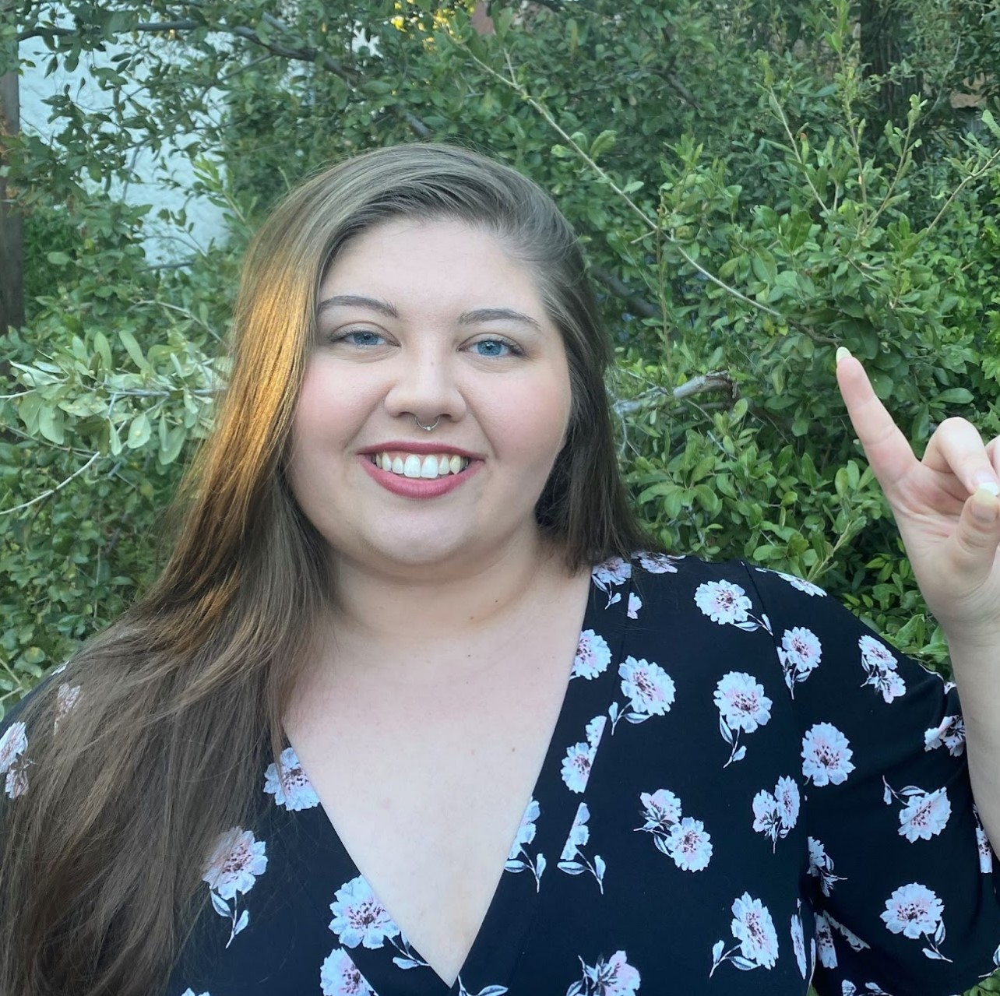

Faculty for Our Camp

Chris O'Brien
Chris is head of Instruction and Curriculum for Cross Examination Debate. He will also be assisting with the varsity CX lab. Mr. O'Brien has worked with teams that have qualified for TFA State and NCFL nationals. He has taught basic argumentation and speaking skills, and worked with all ranges of novices of varying styles of speech and debate. He competed for four years in high school, qualifying and medaling at UIL State as a quarter-finalist and semi-finalist. He qualified for TFA state both his junior and senior year, as well as NSDA. He has worked with small schools competing in UIL and TFA across the state in various events over the past five years, helping teams make appearances at various elimination rounds of UIL state, including multiple appearances at both semis and finals including both finalists in the 2022 4A UIL CX State Finals.

Kay Edwards
Kay will be working in the Varsity CX Debate Lab. Kay has been involved with speech and debate events since 2013 including competing, judging, and consulting. During her time as a competitor at North Lamar High School, she was a state finalist In Policy Debate 3 out of 4 years. She also qualified to the TFA State Tournament twice. A graduate of the University of Texas at Austin with a Bachelor of Social Work, Kay currently splits her time between the speech & debate community and accessibility work, primarily transcribing and captioning content for Deaf/HoH clients.
Kay Edwards
Kay will be working in the Varsity CX Debate Lab. Kay has been involved with speech and debate events since 2013 including competing, judging, and consulting. During her time as a competitor at North Lamar High School, she was a state finalist In Policy Debate 3 out of 4 years. She also qualified to the TFA State Tournament twice. A graduate of the University of Texas at Austin with a Bachelor of Social Work, Kay currently splits her time between the speech & debate community and accessibility work, primarily transcribing and captioning content for Deaf/HoH clients.